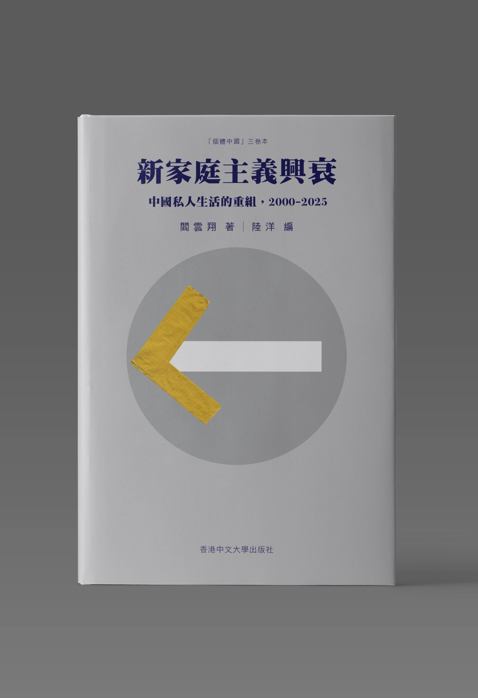
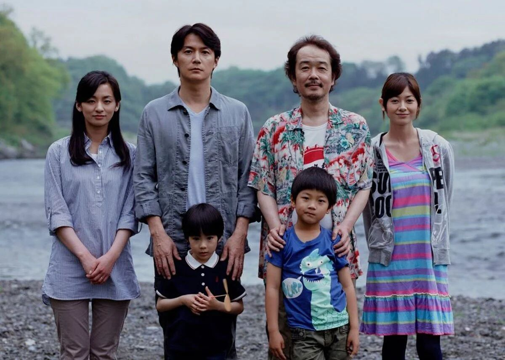

在上一篇《新家庭主义兴衰》（一）：家庭、自由与退路里，我试图梳理一个问题：为什么我们越来越独立，却仍然如此依赖家庭？
家庭吸收了大量来自国家与市场的风险，成为个人生活中最现实的安全网。但家庭越重要，对成员的约束也越深；家庭越努力托举个人，越需要有人持续提供金钱、时间和照护劳动。
当这样的家庭模式逐渐难以维持，年轻人开始重新追问：婚姻和生育一定是人生必选项吗？离开标准轨道以后，还可以怎样生活？当我们开始“做自己”，新的安全感又从哪里获得？

《新家庭主義興衰：中國私人生活的重組，2000–2025》閻雲翔 著．陸洋 編
这些问题构成了阎云翔所写的《新家庭主义兴衰：中国私人生活的重组，2000–2025》的另一条主线：家庭的祛魅，以及祛魅之后尚未成形的新生活。
这里说的家庭祛魅，并不是要否定家庭里的爱与照护，而是开始承认，家庭不天然等于幸福，婚育也并非唯一正确的人生脚本。它可以提供支持，也可能制造控制、牺牲和不平等。
恐婚，是对婚姻背后整套结构的担忧
父亲曾说，在他的“婚姻法”里，三十岁以前必须结婚。
这句话非常准确地体现了一种传统人生脚本：成年、结婚、生育、养育下一代，每一步都有默认时间，偏离的人仿佛就是“犯罪”。
母亲的态度曾经相对温和。她可能并不懂什么是家庭祛魅，也未必认真思考过不婚女性的主体性，但在父亲强烈催婚时，她的沉默有时像一种理解。也许她看到了我拥有她曾经想要却没有获得的选择权。
只是随着年龄增长，她也开始加入催婚。她不像父亲那样把结婚描述成必须完成的义务，更多时候是在表达对衰老与孤独的担忧。个人意愿、父母焦虑与传统脚本，便这样混杂在一次次通话里。
《新家庭主义兴衰》把“婚育并非人生必选项”称为Z世代的一场代际顿悟。划线笔记中有一句话令我印象很深：恐婚背后，其实是对一整套压迫性社会结构的恐惧，而这种结构在女性生育以后，可能伴随其整个人生。
女性恐惧的不是婚礼本身，也不只是担心遇到一个不够好的男人。她恐惧的是不平等的家务分工，是怀孕与分娩对身体的影响，是母职惩罚，是职业发展的中断，是照护劳动被视为理所当然，也是进入丈夫家庭以后，可能重新陷入一套父权关系。
所谓母职惩罚，指的是女性生育之后更容易遭遇职业中断、收入下降和晋升受限。照护劳动常常被视为理所当然，职业发展的代价却主要由女性承担。
部分传统父系家庭结构中，“嫁出去的女儿”会被要求减少对原生家庭的依赖，迅速进入丈夫的亲属网络。这种安排切断了已婚女性在夫家之外可能获得的支持，也强化了公婆特别是婆婆对儿媳的权力。今天的婚姻早已发生变化，但许多结构仍以不同形式延续。
所以，恐婚不只是情绪，也不是年轻女性被互联网吓坏了。它来源于对母辈生活的观察、朋友婚育经历的传播，以及女性对身体、劳动与未来风险更清醒的计算。当婚姻可能使一个人进入一套长期不平等的责任体系时，谨慎并不等于怯懦。
从“什么时候结婚”到“我是否想结婚”
我觉得“婚育并非人生必选项”真正重要的地方，不只是越来越多人选择不婚不育，而是人们改变了问题的问法。
以前，人们问什么时候结婚、什么时候生孩子；现在，越来越多人开始问，我是否想结婚，我是否想生育，我愿意为这种生活承担什么，它又是否适合我。从“什么时候”到“是否”，婚姻和生育不再是一项等待完成的人生任务，而成为了需要主动确认的选择。
这种变化并不意味着年轻人拒绝家庭，也不意味着人不再需要亲密关系。人们只是开始把家庭放回众多生活可能中的一种，而不再将它视为美好人生唯一的证明。
过去一百多年，我们所生活的这个社会中家庭的宗教、经济和政治权威被迅速拆除；改革开放后，家庭的部分功能重新恢复，又转而成为教育投资、住房支持和阶层竞争的单位。婚姻与生育之所以重新拥有吸引力，很大程度上是因为它们曾经与向上流动、家庭成功和稳定生活联系在一起。
可是，当经济增长放缓，就业与住房压力增加，养育成本持续上升，“努力便会成功”的叙事失去说服力以后，婚育的工具性也开始动摇。如果婚姻加生育不再必然通向更稳定、更成功的生活，家庭最后一层工具化的神圣性也就变得非常脆弱。
所以，Z世代的家庭祛魅在情绪背后，是百年家庭变迁与当下生活条件共同作用的结果。
去年写春节的“小姨”叙事时，我已经看到了一种模糊的新想象：女性可以不通过妻子和母亲的身份确认自身价值，也可以对四十岁以后的生活产生不同期待。这些想象可能仍然混杂着消费主义，也并不完整，但至少说明，我们开始允许自己想要一些不同的东西。
家庭正在失去对“美好生活”的垄断权。
离开旧轨道以后，人还需要新的连接
家庭不再是唯一人生脚本，并不等于人从此不再需要归属感。年轻人开始寻找新的连接方式：学习搭子、健身搭子、吃饭搭子和旅行搭子，是一种轻量、可协商、也可以随时解散的陪伴；朋友、宠物、虚拟伴侣和网络社区，也在承担过去主要由婚姻与家庭提供的部分情感功能。
这些关系减少了沉重义务，也允许人根据具体需要建立连接。它们像模块一样，可以组合，也可以拆除，但这种轻盈也有代价。
当关系变得容易退出，它是否还能在疾病、失业和衰老中提供长期支持？当一个人通过断亲、辞职或者退出亲密关系保护自己时，也可能同时失去原本拥有的情感与物质资源。抽离可以带来自由呼吸的空间，也会制造新的真空。
书中一位年轻女性说，她不想结婚生子，却也不知道还可以想象怎样的人生——这和五年前我的困惑，几乎一模一样。家庭的旧答案正在失效，新的社会性支持却还没有凝结。这或许正是许多年轻人悬浮感的来源：我们拥有了拒绝旧生活的语言，却还缺少建设新生活的条件。
“做自己”也可能成为一种新的疲惫
设立边界、反思原生家庭、关注情绪价值、远离消耗自己的关系、学习自我关怀，这些实践帮助许多人重新确认自己。我自己也经历过漫长的自我教育，通过阅读理解阶层、家庭、性别与现代社会，再尝试把这些理解带回生活，重新审视自己的欲望、愤怒和不舒服。
原生家庭话语最重要的价值，也许不只是帮助人找到童年创伤，而是培养一种反思能力。一个人开始重新检查自己的成长经历，判断哪些东西愿意继承，哪些东西必须拒绝。对一些80后而言，反思可能是为了在既有角色中修复自己；对Z世代而言，反思则可能进一步指向改变或者退出这些角色。
我很喜欢书中“疗愈式自我”这个概念，同时又对它保持警惕。它指的是，人借助创伤、边界、自我关怀等心理学语言，重新理解自己，尝试修复那些关系留下的伤害。疗愈能够提醒我们，痛苦并不总是自己的错。一个人可以拒绝情感勒索，可以承认家庭关系造成的伤害，也可以在设立边界的同时继续爱父母。
但疗愈也可能把结构性问题重新变成个人问题。高房价、就业压力、照护缺口与性别不平等，并不会因为我们更了解自己而消失。如果所有困境最后都被解释为边界不足、内在小孩受伤或者还不够爱自己，那么个体仍然需要独自消化本应由社会共同承担的压力。
疗愈可以帮助人修复，却很难独自回答：除了避免伤害，我究竟想过怎样的生活？它更像一副支架，而不是终点。旧秩序要求人服从，新秩序则要求人持续自我解释、自我管理和自我修复，“做自己”因而不只是自由，也是一项漫长、疲惫而无法外包的工作。
主体性不只“独立自主”一种样子
这本书也修正了我对“主体性”的部分理解。
在日常表达中，我们很容易把主体性等同于自主、独立、反抗和离开。一个人拒绝父母催婚、离开家乡、追求热爱的职业，会被称为有主体性；而选择留在家庭、照顾父母或者承担责任的人，则容易被视为没有自我。
但主体性本身并不是一种道德评价。它指的是一个人如何在具体的社会关系、制度和文化中感受自己、理解处境，并采取行动。留下与离开，都可能包含主动选择，也都可能包含无奈和约束；照护家庭不必然意味着失去主体性，追求自由也不必然证明一个人拥有完整的自我。
母亲在家庭里承担了大量劳动，曾在经济与话语权方面受到限制，但她也曾在有限条件中寻找工作，尽可能维持财务主动性，并在过去相当长的时间里相对尊重我的生活选择。这些实践很容易被忽视，因为它们不够激烈，也不像一种公开反抗。
主体性总是在具体处境中产生。母亲未必拥有我所理解的独立生活，却不意味着她从未探索过自我。“做自己”也不应该成为新的唯一正确答案。
如果我们把疗愈式自我、绝对自主和拒绝牺牲视为现代人格的唯一标准，就可能反过来贬低那些仍然重视关系、愿意照护他人，或者以其他方式组织自我的人。真正重要的也许不是一个人是否足够独立，而是他能否反思自身处境，辨认选择中的约束，并理解自己正在为什么承担。
家庭之外的关心，可以从家庭开始
关于家庭主义，我们常见的一种批判是：家庭越团结，人们越只关心自家利益，越缺少对陌生人与公共事务的关注。这在现实中当然存在，住房、教育与阶层竞争不断强化家庭之间的相互防备，每个家庭集中资源保护自己的孩子，也可能使公共责任进一步退场。
但书中关于“父母倡议者”的案例提供了另一种可能。当性少数群体、残障儿童或其他遭受污名的孩子缺少制度支持时，一些父母会因为保护子女而进入公共领域。他们从替自己的孩子争取权益开始，逐渐理解更广泛的社会排斥，并将私人情感转化为公益行动。
家庭之爱并不必然导向封闭，它也可能使一个普通人第一次看见制度的不公。有时，一个人正是因为关心自己的孩子，才第一次看见制度如何排斥另一些人。
更值得期待的是，这种关心能够越过血缘边界。不只是因为那是我的孩子、我的母亲和我的家庭，我才愿意行动；也因为一个陌生人理应获得尊严与平等，我愿意理解和支持。家庭可以成为公共行动的起点，却不应该是公共道德的边界。

还没有答案的新生活
中国家庭具有很强的路径依赖。住房、教育、职场和养老制度仍然奖励遵循常规人生脚本的人，家庭也仍然是最现实的兜底机制。今天拒绝旧脚本的年轻人，未来仍可能因为经济压力、父母衰老与现实责任，再次靠近传统的“做人”实践。
这未必意味着大家重新相信了旧伦理，也可能只是生活推动下的适应。家庭不会一夜崩塌，新的生活方式也不会轻易胜出，我们更可能长时间停留在这种新旧交错的状态里。
我现在也无法明确回答，家庭之外的生活应该如何组织。轻量的连接能否承受长期风险？没有婚姻和血缘，人如何独自面对疾病与衰老？当我们拒绝以牺牲维持关系，又该以什么建立持久的相互责任？这些问题不会因为我们决定“做自己”就自然消失。
也许“做自己”真正困难的部分，已经不再是鼓起勇气离开旧轨道，而是在离开以后，仍然有能力与他人共同生活。我们需要的不只是拒绝一种人生，也需要逐渐创造另一些可以真实生活的人生。